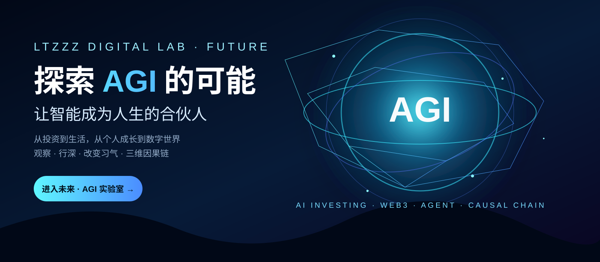

AI 投资
实时数据、研究、策略、回测与模拟交易。真实资金必须经过独立风控和明确授权。
进入模拟 →
这里不是预测 AGI 何时到来，而是从今天开始，把能够验证的能力逐步接入自己的真实世界：观察、行动、反馈、修正。
三维因果链：现实问题 → AI 分析与执行 → 结果数据 → 再观察 → 再行动。先用模拟环境验证，再考虑更高权限。
实时数据、研究、策略、回测与模拟交易。真实资金必须经过独立风控和明确授权。
进入模拟 →研究让 AI 从回答问题走向执行任务：读取数据、形成计划、调用工具、记录结果。
观察链上数据、智能合约和 AI Agent 的结合，先实验、后授权，不直接托管资产。
把个人体验、行为与数据纳入实验日志，让“因果链”真正留下可复盘的记录。
进入「观」 →